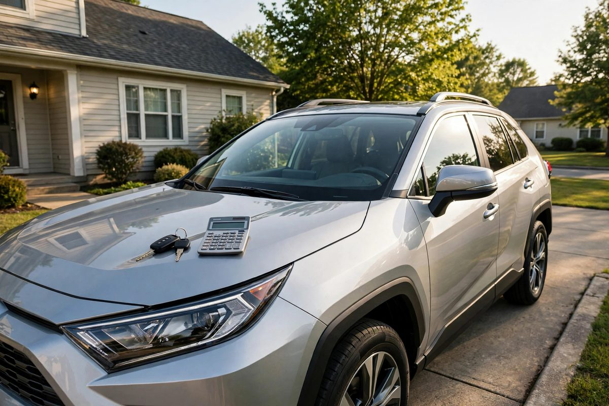
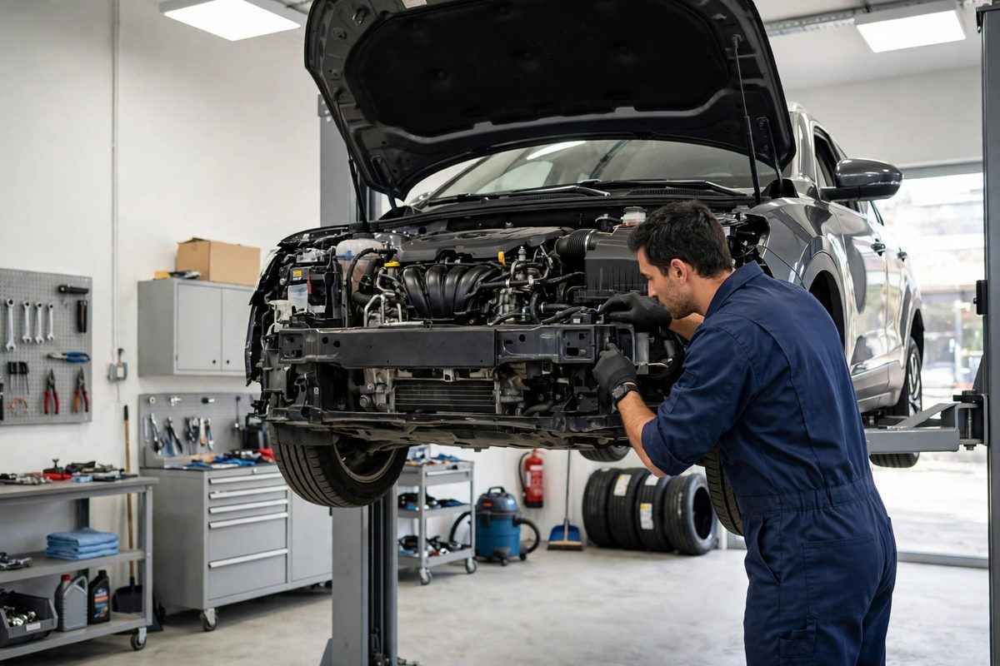

Home › Blog › Total Cost of Owning a Car: How to Calculate It
Total Cost of Owning a Car: How to Calculate It

When you buy a car, the price on the windscreen is only the first number. Fuel, insurance, loan interest, repairs and the value the car quietly loses every year all add up — and for most drivers, they add up to more than the monthly payment suggests.
AAA, the American Automobile Association, has studied this every year since 1950. Its 2025 Your Driving Costs study found that owning and running a new car costs $11,577 a year on average — about $965 a month — for a driver covering 15,000 miles. Your car could cost much less, or much more, and the only way to know is to work it out for your own car.
This guide shows you how to calculate it in four easy steps: the six costs that count, a worked example using the AAA figures, and how to turn the total into a cost per mile.
What Counts as the Total Cost of Owning a Car?
The total cost of ownership is everything you spend because you own the car, not just the bills you notice. AAA breaks it into six parts.
- Depreciation: the value your car loses over time — usually the biggest cost, and the easiest to forget.
- Finance charges: the interest you pay on a car loan, plus any loan fees.
- Fuel: petrol, diesel or electricity — whatever powers your car.
- Insurance: your yearly premium.
- License, registration and taxes: the yearly cost of keeping the car legal, plus the sales tax and fees from the purchase, spread over the years you keep it.
- Maintenance, repair and tires: servicing, new tires, brakes, and the repairs that come with age and miles.
The Total Cost of Ownership Formula
The formula is simple — just one addition.
Total cost of ownership = depreciation + finance + fuel + insurance + license, registration and taxes + maintenance, repair and tires
Work it out for one year. Divide the yearly total by 12 for your monthly cost, and by the miles you drive for your cost per mile. The monthly figure tells you what the car really costs your budget; the cost per mile tells you whether driving beats the alternatives for a particular trip.
Here is what the average looks like, using AAA's 2025 figures for a new car driven 15,000 miles a year.
| Cost | Per year | Share of total |
|---|---|---|
| Depreciation | $4,334 | 37% |
| Fuel (13¢ per mile) | $1,950 | 17% |
| Insurance | $1,694 | 15% |
| Maintenance, repair & tires (11.04¢ per mile) | $1,656 | 14% |
| Finance charges | $1,131 | 10% |
| License, registration & taxes | $813 | 7% |
| Total | $11,577 | 100% |
The column total is a dollar off AAA's published $11,577 because of rounding. Depreciation alone is more than a third of the total — bigger than fuel and insurance combined — and the monthly figure, about $965, is far more than most people guess.
How to Calculate the Total Cost of Your Car in 4 Steps
A sheet of paper and your last twelve months of bills will do. Use real numbers from your own car wherever you can, and the AAA averages only where you have no figure of your own.
Step 1 — Gather your yearly numbers
Collect one year of bills: insurance, loan statement, fuel receipts, service invoices, and the registration renewal. If you do not keep fuel receipts, estimate fuel from your mileage and fuel economy: miles driven divided by MPG, times the price per gallon.
Also write down how many miles you drove in the year, and what you paid for the car and what it is worth now. Those two numbers drive the biggest cost of all, which is the next step.
Step 2 — Work out depreciation
Depreciation is what you paid for the car minus what it is worth now, divided by the years you have owned it. A car bought for $30,000 three years ago and worth $18,000 today has lost $12,000 — $4,000 a year.
For a car you are thinking of buying, look up the same model a few years old — that gap is the depreciation to expect. New cars lose value fastest early on, so buying new and selling after three years costs far more than buying at three years old and selling at six. Want a quick estimate? Try our free car depreciation calculator.
Step 3 — Add up the running costs
Now add the driving costs: fuel, insurance, finance charges, license and registration, and maintenance, repair and tires — using the real yearly figures from step 1.
For fuel: yearly miles ÷ MPG × price per gallon — 12,000 miles a year at 30 MPG uses 400 gallons, or $1,400 a year at $3.50 a gallon. For maintenance, add service bills and repairs, plus a share of the next set of tires: a $600 set lasting three years adds $200 a year.
Step 4 — Add everything and divide
Add the depreciation from step 2 to the running costs from step 3 for your total yearly cost. Divide by 12 for the monthly cost, and by your yearly miles for the cost per mile.
Here is a worked example: a three-year-old sedan, bought for $30,000 and now worth $18,000, driven 12,000 miles a year.
| Cost | Per year |
|---|---|
| Depreciation ($12,000 over 3 years) | $4,000 |
| Fuel (12,000 miles, 30 MPG, $3.50 per gallon) | $1,400 |
| Insurance | $1,500 |
| Maintenance, repair & tires | $900 |
| Finance charges | $800 |
| License, registration & taxes | $400 |
| Total | $9,000 |
That is $750 a month, or 75 cents a mile. Change any one number and the total moves with it — that is the point of doing the sum for your own car instead of trusting an average.
The Biggest Cost: Depreciation
Depreciation is the largest cost and the one most owners never count. AAA's 2025 study puts it at $4,334 a year for an average new car — about $21,700 over five years, more than half of the study's average new-car price of $38,938.
Three things speed it up: new cars lose value fastest in their first year; high mileage pulls the value down faster; and some models simply hold their value better than others.
You cannot avoid depreciation, but you can choose how much you pay. Keeping a car longer spreads the loss over more years, and buying used, choosing a model with strong resale value, and keeping the mileage down are the three levers that matter most.
Fuel, Insurance and Maintenance: The Costs You Can See
Fuel is the cost you notice most, because you pay it every week. AAA's 2025 figure is 13 cents a mile, based on regular petrol averaging $3.151 a gallon — $1,950 a year at 15,000 miles. A car that uses half as much fuel saves close to $1,000 a year at the same mileage.
Insurance is the second cost you can shop around for. AAA's average is $1,694 a year for full cover, but the range is wide: your age, driving record, address and car can move the premium by hundreds of dollars either way. Comparing quotes every year or two is one of the easiest savings in car ownership.

Maintenance, repair and tires come to 11.04 cents a mile in AAA's study, or $1,656 a year at 15,000 miles. This cost surprises people most because it arrives in lumps: tires one year, brakes the next, a bigger repair the year after. Setting aside $100 to $150 a month stops a repair bill from becoming a crisis.
The Hidden Costs People Forget
The six AAA categories cover the big money, but a few smaller costs belong in your own total: parking and tolls, which can add hundreds of dollars a year for a city driver; tickets and fines; car washes and small extras; and accessories such as a roof box or tow bar.
What Is Your Cost Per Mile?
The cost per mile is the most useful number here. Divide your total yearly cost by the miles you drove that year: AAA's average, $11,577 divided by 15,000 miles, gives about 77 cents a mile.
The figure moves with your mileage: the same average car costs about $1.00 a mile at 10,000 miles a year and about 66 cents at 20,000, because fixed costs are spread over more miles while only fuel and wear grow with each extra mile.
The IRS sets a standard mileage rate each year for business driving, based on its own study of running costs. For 2026, the rate is 72.5 cents per mile — close to AAA's 77-cent average. You can read the IRS announcement on irs.gov.
Once you know your own cost per mile, you can answer practical questions. Is it cheaper to drive or fly for a 400-mile trip? At 75 cents a mile, the drive costs about $300 before food and hotels.
How to Lower Your Total Cost of Ownership
These five moves cut the biggest costs first.
- Buy a car that is two or three years old. The first owner paid the steepest depreciation, and you get a nearly new car.
- Keep the car longer. A car kept for ten years costs far less per year than the same car replaced after three.
- Compare insurance every year. Premiums drift up quietly, and a new quote can save hundreds.
- Drive smoothly and keep the tires at the right pressure. Gentle acceleration and steady speeds cut fuel use and make tires and brakes last longer.
- Service on time. A missed service can turn a small repair into a big one.
Work out your own total once a year, the same week you renew your insurance — it takes half an hour.
Frequently asked questions
How much does it cost to own a car per year?
AAA's 2025 Your Driving Costs study puts the average at $11,577 a year, or about $965 a month, for a new car driven 15,000 miles a year, covering depreciation, finance, fuel, insurance, license and registration, taxes, and maintenance, repair and tires.
What is the formula for the total cost of car ownership?
Total cost of ownership = depreciation + finance charges + insurance + license, registration and taxes + fuel + maintenance, repair and tires. Add the six yearly figures for your yearly cost, divide by 12 for the monthly cost, or by the miles you drive for your cost per mile.
What is the biggest cost of owning a car?
Depreciation — the value your car loses over time — is the biggest cost for most owners, at $4,334 a year on average for a new car in AAA's 2025 study, more than fuel or insurance. It is also the cost people forget most often, because no bill ever arrives for it.
How do I calculate my cost per mile?
Divide your total yearly cost by the miles you drive in a year. At 15,000 miles a year, AAA's average of $11,577 works out to about 77 cents a mile. More miles means a lower cost per mile, because fixed costs are spread further.
Does the IRS mileage rate cover the full cost of owning a car?
The IRS business standard mileage rate for 2026 is 72.5 cents per mile, close to AAA's 77-cent average. It is an estimate based on the average cost of running a car, so use it as a rough guide — your real cost can be higher or lower.